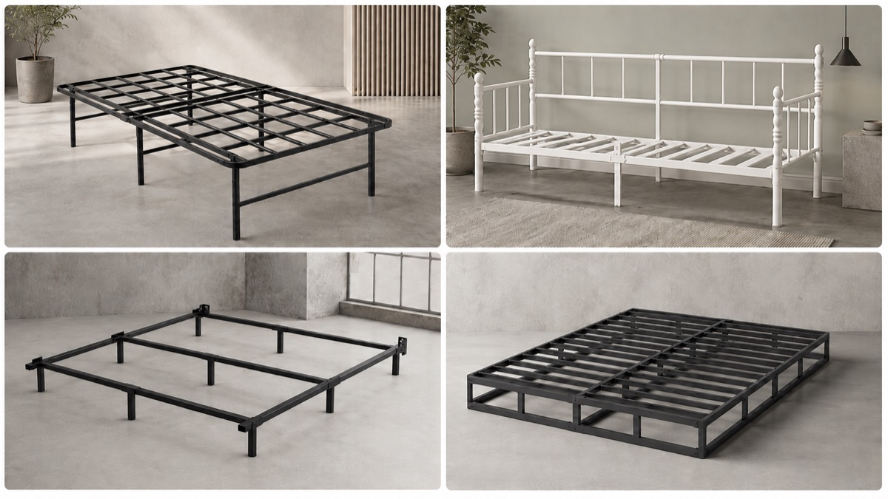
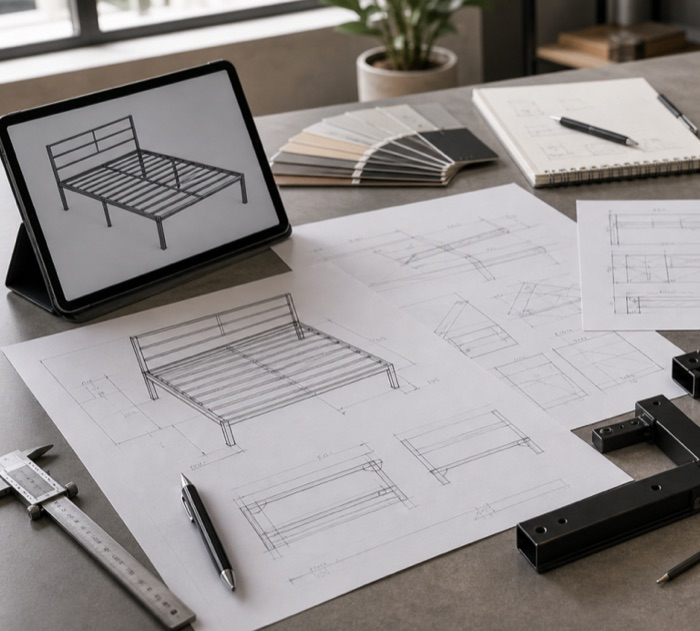
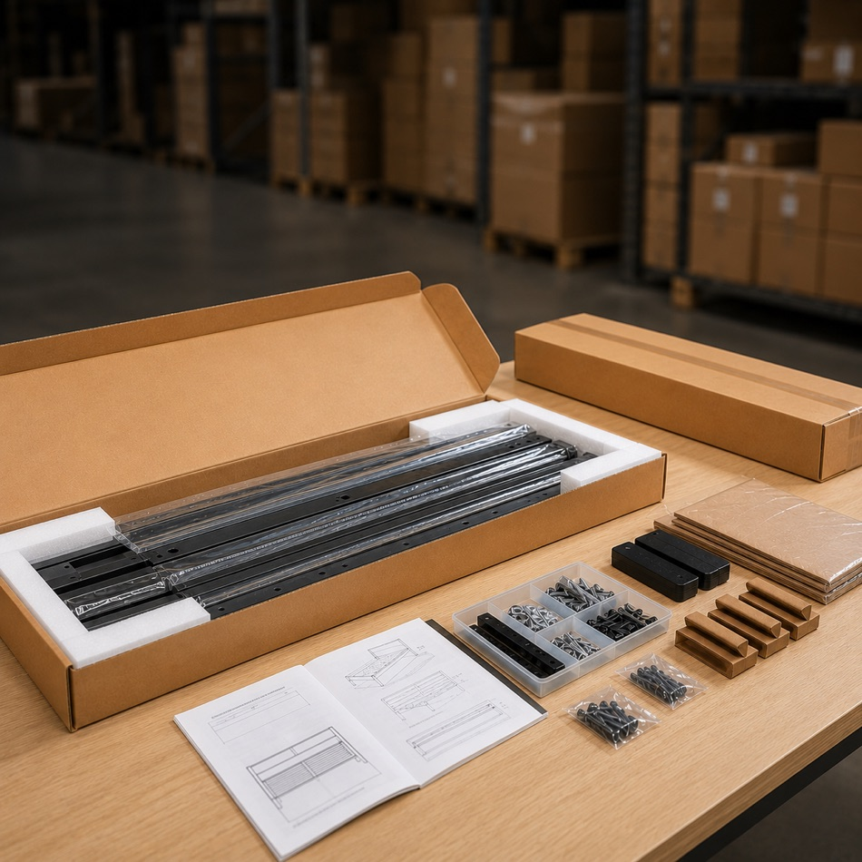

Metal Bed Frame Manufacturer
Review metal bed frame manufacturing and development support for B2B channels.

A clear production process helps partners understand how metal bed frames move from product requirements to finished goods.
Apexnix focuses on practical production coordination for metal bed frame products, with attention to structure, surface finish, packaging, assembly, and quality control.
Confirm product type, size, structure, material direction, surface finish, packaging needs, quantity, and target market.
Prepare steel tubes, slats, brackets, hardware, and related components based on product specification.
Cut tubes and components according to required dimensions and structure design.
Process holes, connection points, bends, and structure-related details as needed.
Weld or assemble key structural parts and review important connection areas.
Prepare the surface before coating to support better appearance and finish consistency.
Apply surface finish based on product color and appearance requirements.
Check fitting, dimensions, structure, hardware, and assembly logic before packaging.
Organize parts, hardware, instructions, labels, protection materials, and carton packing.
Review packaging, order details, shipping marks, and shipment-related requirements.
For B2B bed frame partners, production is closely connected with cost, packaging, assembly, and after-sales performance. A small structure change may affect material use, carton size, shipping efficiency, installation experience, and final product positioning. That is why Apexnix supports product discussion from both manufacturing and commercial perspectives.

Beyond manufacturing, B2B partners often need support with product line planning, sample confirmation, packaging discussion, private-label requirements, order coordination, and export communication. Apexnix supports these discussions to help partners build more practical bed frame supply programs.

Review metal bed frame manufacturing and development support for B2B channels.
Review practical quality control points connected with production and shipment.
Explore packaging preparation, carton planning, and instruction topics.
Review broader supply capabilities and coordination support.
Share your product type, structure, quantity, target market, and packaging needs so we can discuss a practical production direction.